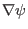
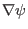

Next: Form of operator in Up: Magnetic surface coordinates general Previous: Poloidal angle used in
In the above, we have given the covariant form of the magnetic field in
 coordinates (i.e., Eq. (177)). Next, we derive
the corresponding form in
coordinates (i.e., Eq. (177)). Next, we derive
the corresponding form in
 coordinate. In order to do
this, we need to express the
coordinate. In order to do
this, we need to express the
 basis vector in terms of
,
basis vector in terms of
,
 , and
, and
 basis vectors. Using the definition
of the generalized toroidal angle, we obtain
basis vectors. Using the definition
of the generalized toroidal angle, we obtain
| (267) |
yj 2018-03-09